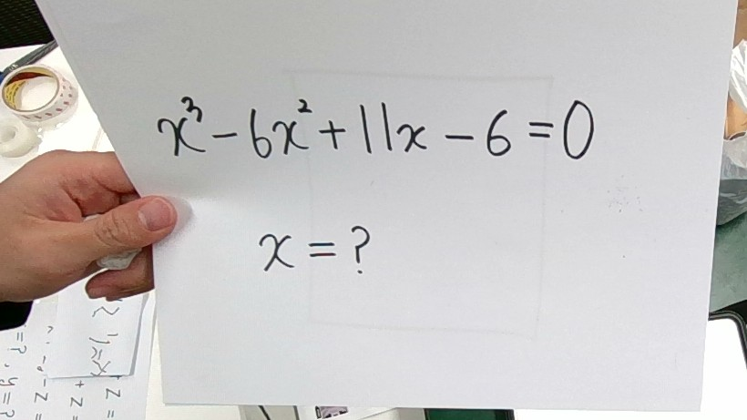
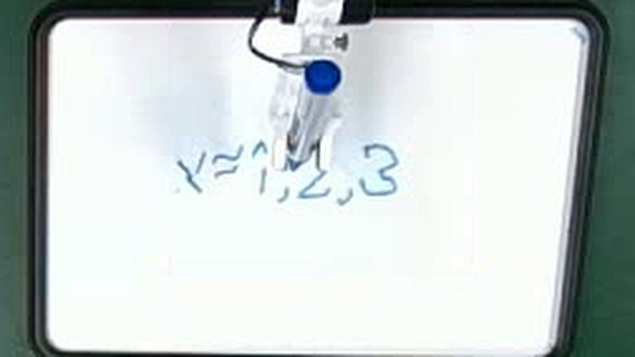
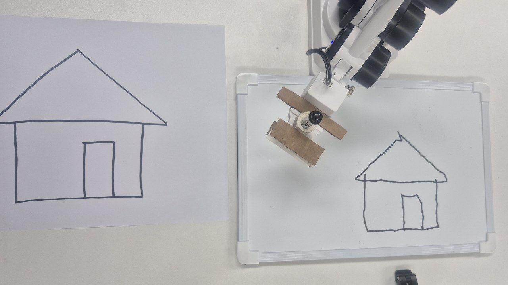
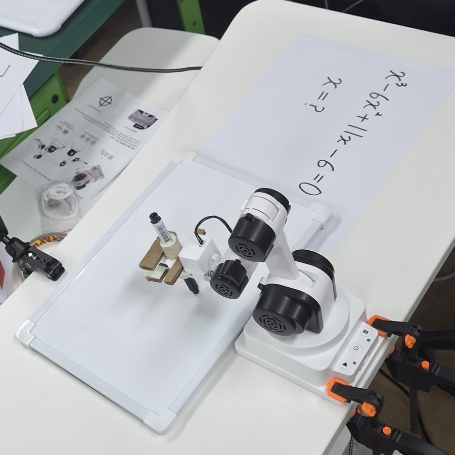

책상 위 로봇팔 · 프로토타입
보고, 풀고,
씁니다.
종이에 적은 수학 문제를 책상에 올려놓으세요. 카메라가 읽고, AI가 풀고, 작은 로봇팔이 보드마카로 답을 써 드립니다.
문제 하나가 풀리기까지
문제지를 놓고 Enter 한 번
나머지는 로봇이 합니다. 아래는 삼차방정식 한 문제를 실제로 풀었을 때의 기록입니다.
-
1
본다

책상 위 카메라가 사진 한 장을 찍습니다. 손으로 쓴 문제도 읽습니다.
-
2
푼다
AI가 돌려준 풀이
- x3 − 6x2 + 11x − 6 = 0
- (x − 1)(x2 − 5x + 6) = 0
- (x − 1)(x − 2)(x − 3) = 0
- x = 1, 2, 3
AI가 식을 읽고 풀이와 답을 만듭니다. 10~20초 걸립니다.
-
3
쓴다

로봇팔이 한 획씩 답을 씁니다. 3 cm 글씨 일곱 자에 1분 46초.
그림도 됩니다
그림을 놓으면 따라 그립니다
수학 문제인지 그림인지는 AI가 먼저 구분합니다. 그림이면 선으로 바꾼 뒤, 로봇이 닿는 범위 안에서 가장 크게 옮겨 그립니다.

작동 원리
사진 한 장이 펜의 움직임이 되기까지
프로그램 하나가 네 단계를 차례로 실행합니다. AI는 한 문제에 한 번만 부릅니다.
- 01
촬영
깊이 카메라로 책상을 1280×720 사진으로 찍습니다. 세 장을 평균해 흔들림을 줄입니다.
- 02
판단
사진과 지시를 Gemini에 한 번 보냅니다. 수학이면 풀이와 답을, 그림이면 위치와 25획 이내의 선화를 받습니다.
- 03
계획
답은 한 획 글꼴로, 그림은 기울기를 바로잡아 선으로 바꿉니다. 모든 점이 로봇에 닿는지 미리 계산합니다.
- 04
실행
이동마다 안전 범위를 검사하며 펜을 내리고, 긋고, 듭니다. 도착 위치는 전부 기록으로 남깁니다.
직접 해 보기
로봇 글씨체로 써 보세요
로봇은 선 몇 개로 된 글꼴로 씁니다. 여기 나오는 획은 실제 로봇에 들어 있는 것과 같습니다. 맞은편 사람이 읽기 좋도록, 로봇은 자기 쪽에서 볼 때 글씨를 거꾸로 씁니다.

준비물
책상 위에 있는 것은 이게 전부입니다
로봇팔 하나, 카메라 한 대, 화이트보드 한 장, 펜 한 자루. 카메라는 거치대 위에서 책상을 내려다봅니다.
- 글자 높이
- 3 cm
- 평균 위치 오차
- 2 mm
- 답 한 줄 쓰는 시간
- 1분 46초
- AI가 생각하는 시간
- 10~20초